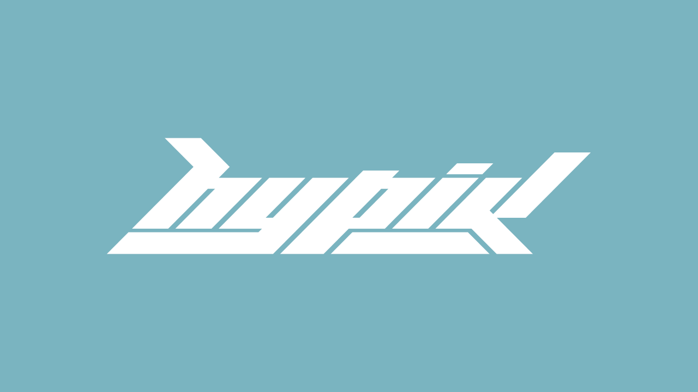

MATT COLE WILSON
————————————————————————————
graphic design / kansas city
MATT COLE WILSON
————————————————————————————
graphic design / kansas city
I've used a ton of free design resources over the years and I love giving back. Below are a few free assets you can use in personal and commercial projects. No credit or attribution necessary, but if you make something cool with any of these, I'd love to see it!

hypik™ → free logotype font (A-Z only) / inspired by the vectorheart design movement / download via google drive

KILBY → free typeface (two weights) / inspired by the futurism of the Y2K era / download via google drive

geizer → free font / inspired by horror and heavy metal / download from dafont

sorta → free font / designed for sortabrilliant.com / download from sortabrilliant

acid icons → free abstract icons inspired by the acid graphic design movement / download via google drive
© mattcolewilson → last updated january 2022